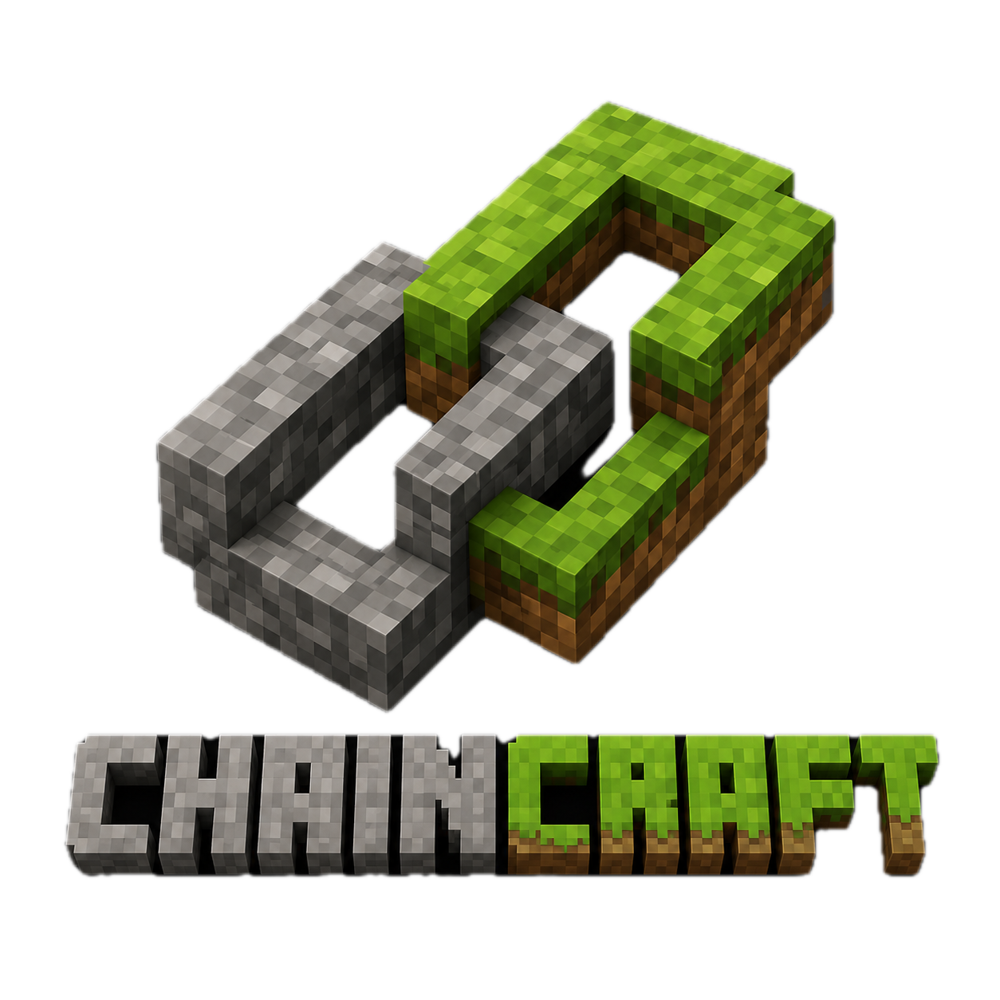

Open
Peers discover each other over UDP, gossip SharedMessage
payloads, and run your validators in a linear pipeline — no central
broker required for teaching labs.

Open-source Python toolkit for gossip networks, consensus experiments,
and modular blockchains — you implement SharedObject logic;
the node handles transport, deduplication, and sync.
Chaincraft separates protocol rules from network plumbing so researchers and students can prototype gossip networks, consensus, and modular blockchains — swap ledgers, fee policies, and engines by name.
Peers discover each other over UDP, gossip SharedMessage
payloads, and run your validators in a linear pipeline — no central
broker required for teaching labs.
Messages are hashed and deduplicated at the node. Merkelized
SharedObjects expose digests so nodes can request missing
history and detect canonical reorgs.
In 0.6.0, ledgers, fee markets, mempools, consensus engines, beacons,
and chat/pub-sub protocols register by name — assemble a chain with
BlockchainConfig, not a fork of the whole repo.
Pick components from registries; invalid combinations fail at
validate() time with a clear error.
Requires the release/0.6.0 branch (not yet on PyPI 0.5.x):
git checkout release/0.6.0 && pip install -e ".[dev]"
| Family | Module | Select by name |
|---|---|---|
| Ledger | chaincraft.ledger |
balance, utxo |
| Fees | chaincraft.fees |
highest_first, median, eip1559 |
| Consensus | chaincraft.consensus |
relay, avalanche, tendermint, pbft, pow, beacon, … |
| Protocols | chaincraft.protocols |
ChatGroup, TopicPubSub, CRDTKeyValue |
| Beacon | chaincraft.beacon |
block sources + randomness derivations (no ledger) |
| Assembly | chaincraft.config |
BlockchainConfig + build_blockchain() |
Consensus families (all implement propose, is_decided, decision):
from chaincraft import BlockchainConfig, build_blockchain
config = BlockchainConfig(
ledger_model="balance",
fee_policy="highest_first",
genesis_allocations={"alice": 1000},
).validate()
chain = build_blockchain(config)
One ChaincraftNode runs listener, gossip, and merkelized-sync
threads. Your code never opens sockets or spawns protocol threads.
Multi-object nodes: register merkelized chain → ledger →
mempool so frontier_state (StateMemento) flows downstream on reorgs.
A Substrate-style walkthrough: from zero to a gossiped message across three peers. No custom consensus yet — just the substrate every protocol builds on.
Python 3.8+ and the cryptography package.
# PyPI (0.5.x): node, SharedObject, examples
pip install chaincraft
# From source (Hello World + CLI):
git clone https://github.com/jio-gl/chaincraft.git
cd chaincraft && pip install -e ".[dev]"
# Modular stack snippets below need release/0.6.0:
git checkout release/0.6.0 && pip install -e ".[dev]"
For a minimal app you subclass SharedObject with
is_valid and add_message. The node wraps your
dict in a SharedMessage, hashes it, stores it, and gossips
to peers. The runnable hello_node.py script (next section)
defines HelloObject and wires it to a node.
Use the CLI with in-memory storage and debug logging. Each node connects to the previous one as a seed peer — a small line topology.
# Terminal 1 — bootstrap
chaincraft-cli -p 21001 -d -m
# Terminal 2 — discovers via seed
chaincraft-cli -p 21002 -s 127.0.0.1:21001 -d -m
# Terminal 3
chaincraft-cli -p 21003 -s 127.0.0.1:21002 -d -m
Flags: -d debug, -m memory (non-persistent),
-s HOST:PORT seed peer, -p port.
In terminal 1, type any line and press Enter. The CLI passes your
input as the message payload (a string) to
create_shared_message; peers receive the same hash after gossip.
Hello, Chaincraft!
The CLI does not parse JSON — it stores exactly what you typed. For
dict payloads (e.g. {"message": "…"}), use the Python API below.
Watch debug output on all three terminals as the message propagates. Same content → same hash → deduplication prevents loops.
Save as hello_node.py, register your object before
start(), then gossip a dict payload. Prints on the sender
immediately; run a second copy on port 9001 to receive
over the network.
#!/usr/bin/env python3
"""hello_node.py — python hello_node.py (optional peer on :9001)"""
import time
from chaincraft import ChaincraftNode
from chaincraft.shared_object import SharedObject
from chaincraft.shared_message import SharedMessage
class HelloObject(SharedObject):
def is_valid(self, message: SharedMessage) -> bool:
data = message.data
return isinstance(data, dict) and "message" in data
def add_message(self, message, frontier_state=None):
text = message.data["message"]
print(f"Received: {text}")
return None
def main() -> None:
node = ChaincraftNode(port=9000, local_discovery=True)
node.add_shared_object(HelloObject())
node.start()
node.connect_to_peer("127.0.0.1", 9001, discovery=True)
node.create_shared_message({"message": "Hello from SharedObject!"})
time.sleep(1)
node.close()
if __name__ == "__main__":
main()
Add merkelized sync for block chains, handle_p2p for
Slush-style sampling, or plug in a consensus engine from
chaincraft.consensus. See
examples/*_demo.py on the release branch and
SPECS v3.
Three paths depending on what you are building.
chaincraft-cli -p 21000 — experiment with gossip and peer
discovery before writing a protocol class.
Chat, voting, beacons — implement is_valid and
add_message; on 0.6.0 see
examples/chatgroup_demo.py.
BlockchainConfig + consensus engine + ledger (0.6.0).
Start with examples/blockchain_demo.py.